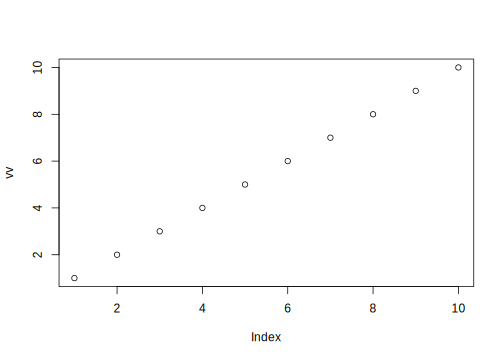
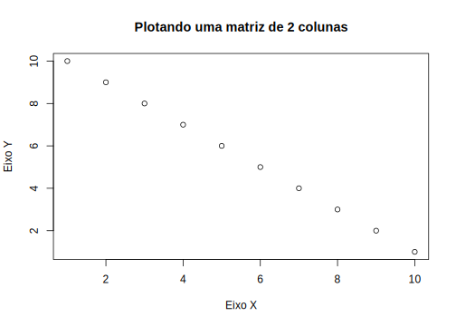
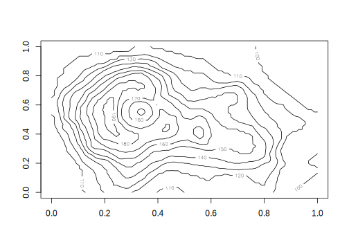
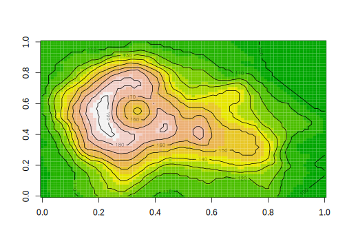
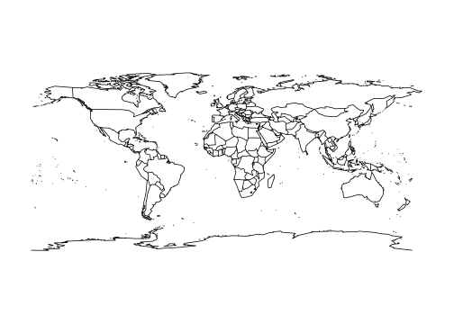
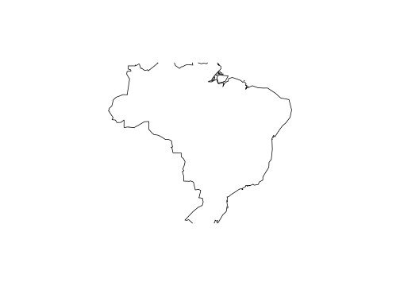

5.4 Funções gráficas de alto nível
Funções gráficas de alto-nível (highlevel plots) são as funções que usamos para gerar os gráficos.
Além da função genérica plot(), veremos apenas alguns poucos exemplos, mas existem diversas funções gráficas de alto nível, muitas das quais dependem de pacotes específicos.
Existem inúmeras outras funções de alto-nível, algumas do R-base, outras geradas por colaboradores na forma de pacotes do R.
A função plot() entende algumas dessas outras funções dos pacotes automaticamente, dependendo da classe do objeto, e você sequer precisa usar o nome específico (veja o exemplo em plot.phylo(), abaixo).
No ? do pacote graphics, você encontra ajuda para funções gráficas em geral:
demo("graphics") # execute este demostrativo - lembre-se de interagir no console do R para as figuras
?graphics # veja o help dessa função para alguns gráficos5.4.1 plot() - uma função genérica
A função plot() é a principal para produção de gráficos porque é uma função genérica que irá gerar um gráfico dependendo da classe do objeto. Em muitos casos, não precisamos usar outras funções, porque a depender da classe do objeto, esta função automaticamente entenderá o que você precisa.
?plot # veja o help dessa funçãoSuponha que tenhamos um vetor simples e numérico chamado vv:
vv <- 1:10
# Qual e a classe desse vetor?
class(vv)## [1] "integer"Vamos plotá-lo:
plot(vv)
Vamos mudar alguns argumentos da função plot().
Acrescentaremos um tipo diferente de ponto (argumento pch), uma cor vermelha para o fundo do ponto (argumento bg), um novo texto para o eixo x (argumento xlab), um novo texto para o eixo y (argumento ylab), e um título para o plot (argumento main):
plot(vv, pch = 21, bg = "red", xlab = "índice do vetor", ylab = "valor do vetor", main = "Plotando um vetor")Vamos trabalhar agora com uma matriz de duas colunas:
xx <- 1:10 # um vetor
yy <- 10:1 # o mesmo vetor invertido
mm <- cbind(xx, yy) # junta em uma matrix
# Qual a classe dessa matriz?
class(mm)## [1] "matrix" "array"Vamos utilizar a matriz de duas colunas mm diretamente como primeiro argumento da função plot():
plot(mm, xlab = "Eixo X", ylab = "Eixo Y", main = "Plotando uma matriz de 2 colunas")
Podemos também especificar separadamente os eixos x e y, utilizando os vetores xx e yy, utilizados para compor a matriz mm:
# ou poderia especificar diretamente os eixos xx e yy sem usar a matriz
plot(xx, yy, xlab = "Eixo X", ylab = "Eixo Y", main = "Plotando uma matriz de 2 colunas", pch = 21, bg = "purple")Se temos um conjunto de dados e queremos ver a relação entre si de todas as colunas do conjunto, podemos simplesmente usar:
class(iris) # um conjunto de dados no formato data.frame## [1] "data.frame"plot(iris)# o nome dos eixos está na diagonal dessa figura5.4.2 hist()
Esta importante função serve para visualizar a variação de uma variável apenas.
?hist # veja o helpVamos utilizar apenas a variável Sepal.Length do conjunto de dados iris:
class(iris$Sepal.Length) # é um vetor## [1] "numeric"hist(iris$Sepal.Length, xlab = "Comprimento de sépala (cm)", main = "Variação em Iris")Vamos diminuir os espaçamentos entre as barras e colorí-las:
# diminuindo os espaçamentos entre as barras e colorindo
hist(iris$Sepal.Length, xlab = "Comprimento de sépala (cm)", main = "Variação em Iris", breaks = 20, col = "red")# note que o eixo y é a frequencia que o valor ocorre, ou seja, corresponde ao número de linhas em iris que tem valor5.4.3 boxplot()
Esta função é importante por mostrar a variação em uma variável qualquer em relação às categorias de um fator. É uma das melhores formas gráficas para mostrar a distribuição de valores de uma variável em relação às categorias.
?boxplot# vamos usar o objeto iris
class(iris$Sepal.Length) # é um vetor## [1] "numeric"class(iris$Species) # é um fator## [1] "factor"boxplot(iris$Sepal.Length ~ iris$Species, ylab = "Comprimento da sépala")# você pode fazer a mesma coisa com a função plot() porque ela é genérica que irá reconhecer que sua fórmula 'valores~fator' pede por um boxplot
plot(iris$Sepal.Length ~ iris$Species, ylab = "Comprimento da sépala", xlab = "") # note que especificamos aqui que o eixo x não tem título (lab)5.4.4 barplot()
Esta função gera um gráfico de barras simples.
?barplot # veja o help dessa função
?VADeaths # veja o help desse conjunto de dadosclass(VADeaths)## [1] "matrix" "array"VADeaths # taxas de mortalidade/1000 habitantes no estado da Virgínia em 1940| Rural Male | Rural Female | Urban Male | Urban Female | |
|---|---|---|---|---|
| 50-54 | 11.7 | 8.7 | 15.4 | 8.4 |
| 55-59 | 18.1 | 11.7 | 24.3 | 13.6 |
| 60-64 | 26.9 | 20.3 | 37.0 | 19.3 |
| 65-69 | 41.0 | 30.9 | 54.6 | 35.1 |
| 70-74 | 66.0 | 54.3 | 71.1 | 50.0 |
rownames(VADeaths) # cada linha é uma classe de idade## [1] "50-54" "55-59" "60-64" "65-69" "70-74"colnames(VADeaths) # cada coluna é sexo e cidade ou rural## [1] "Rural Male" "Rural Female" "Urban Male" "Urban Female"# com as informações padrão
barplot(VADeaths) # cada cor é uma linhabarplot(VADeaths, beside = TRUE) # lado a lado (cada barra é uma linha)# vamos colorir diferente, uma para cada linha
rownames(VADeaths)## [1] "50-54" "55-59" "60-64" "65-69" "70-74"cores <- rainbow(n = nrow(VADeaths))
cores # uma cor por linha## [1] "#FF0000" "#CCFF00" "#00FF66" "#0066FF" "#CC00FF"# essa é a correspondencia:
cbind(rownames(VADeaths), cores)| cores | |
|---|---|
| 50-54 | #FF0000 |
| 55-59 | #CCFF00 |
| 60-64 | #00FF66 |
| 65-69 | #0066FF |
| 70-74 | #CC00FF |
# plota com essas cores
barplot(VADeaths, beside = TRUE, col = cores)5.4.5 plot.phylo()
O pacote Ape (Analyses of Phylogenetics and Evolution) (Paradis et al. 2020) possui uma função para desenhar uma filogenia.
Caso você não tenha instalado o pacote ape ainda, faça-o assim:
install.packages("ape")Depois, siga o exemplo abaixo:
library(ape) # chama o pacote
# uma filogenia hipotética para exemplo
arv <- "(((A:1,B:1):2,C:3):0.5,((D:0.5,E:0.5):1,F:1.5):2);"
# lê essa filogenia para um objeto de classe phylo, que é uma classe para dendrogramas.
phy <- read.tree(text = arv)
class(phy)## [1] "phylo"# podemos plotar essa filogenia com
plot(phy)# porque a função plot reconhece
# que objetos de classe "phylo" são árvores
# de fato ela usa a função plot.phylo() para gerar essa figura, que contém argumentos específicos para objetos dessa classe?plot.phylo # veja o help e os argumentos# portanto posso incluir argumentos de plot.phylo() quando uso a função plot() para plotar um objeto de classe phylo
plot(phy, no.margin = TRUE, tip.color = c(rep("red", 3), rep("blue", 3)))
# seria o mesmo que dizer
plot.phylo(phy, no.margin = TRUE, tip.color = c(rep("red", 3), rep("blue", 3)))5.4.6 image() e countour()
# existe um conjunto de dados topográficos na base do R que vamos usar como exemplo
class(volcano) # é uma matriz
dim(volcano) # com 87 linhas e 61 uma colnas
volcano[1:5, 1:5] # os valores são altitude
hist(volcano, breaks = 20) # essa é a distribuição de valores de elevacao
range(volcano) # amplitude de variação# podemos usar algumas funções para visualizar um conjunto de dados que tem essa estrutura (matrix)
?image # veja o helpimage(volcano, col = heat.colors(12))?heat.colors # veja opções de gradientes continuos de cores# vamos mudar isso,
cores <- terrain.colors(12) # 12 categorias de cores
cores # o código é uma cor em HTML## [1] "#00A600" "#24B300" "#4CBF00" "#7ACC00" "#ADD900" "#E6E600" "#E8C727"
## [8] "#EAB64E" "#ECB176" "#EEB99F" "#F0CFC8" "#F2F2F2"image(volcano, col = cores)# notem a cratera?contour # veja o help# outra opção é fazermos os contornos (ou curvas de nível neste caso do vulcão)
contour(volcano)
# vamos mudar o número de níveis para o mesmo usado para as cores
contour(volcano, nlevels = 12)
# vamos juntar essas figuras em uma só
image(volcano, col = cores)
contour(volcano, nlevels = 12, add = TRUE)
# note o argumento add=TRUE que indica para a função de alto-nível
# que ela não deve começar uma nova figura,
# apenas adiciona à uma já criada por outra função de alto-nível
# muitas funções de alto-nível tem esse argumento add, que, portanto, mimetiza o que função gráfica de baixo-nível faz5.4.7 map()
O pacote maps (Brownrigg 2018) fornece funções para desenhar mapas com divisões administrativas.
A função map() é uma de alto-nível.
Veremos depois como adicionar sobre esses mapas informação através de funções de baixo-nível.
?maps::map # veja o helpCaso você não tenha instalado o pacote maps ainda, faça-o assim:
install.packages("maps")Agora, siga o exemplo abaixo:
library(maps) # instalar se não tiver instalado
map() # mapa do mundo
map(region = "Brazil") # Brazil
# dev.off() #pode precisar fechar o dispositivo se estiver avisar que a figura é muito grande
dev.off()## null device
## 1sa <- c("Brazil", "Guyana", "French Guiana", "Suriname", "Venezuela", "Colombia", "Ecuador", "Trinidad-Tobago", "Peru", "Bolivia", "Paraguay", "Chile", "Argentina", "Uruguay", "Panama")
map(region = sa, col = "red", lty = "dashed")5.4.8 xlim e ylim
Esses dois parâmetros gráficos permitem ajustar o tamanho dos eixos de um gráfico, impondo limites.
# CONTROLANDO UM XLIM
plot(iris$Sepal.Length, iris$Sepal.Width, pch = 21, col = "red")
# vamos aumentar um pouco o eixo X
rg <- range(iris$Sepal.Length) # variacao atual
rg
# aumentar
rg2 <- rg + c(-1, +1) # adicionamos 1 unidade de cada lado
rg2
plot(iris$Sepal.Length, iris$Sepal.Width, pch = 21, col = "red", xlim = rg2)
# LIMITANDO UM MAPA POR SUAS COORDENADAS
dev.off()
library(maps) # instalar se não tiver instalado
map() # mapa do mundo
# alguns limites em latitude e longitude
lat0 <- -22
lat1 <- 5
long0 <- -80
long1 <- -30
dev.off()
map(xlim = c(long0, long1), ylim = c(lat0, lat1))